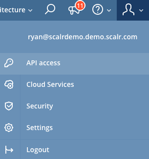
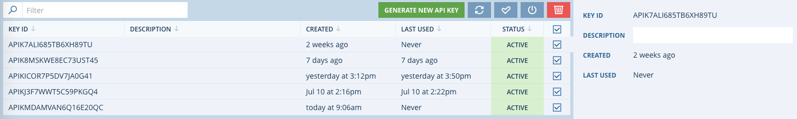

Command Line Interface (CLI)¶
Scalr-ctl is a command-line tool intended to help you deploy, update, and manage components of your Scalr deployment as well as the workloads you it is managing. Follow the Scalr CLI release notes page for any updates: Scalr CLI Release Notes  .
.
Generating API Keys¶
To use the CLI, you first need API keys.
To generate API keys in Scalr, go to the top right and click on the silhouette of your user and down to API Access:
{kind=link}
Once you are in the API Keys page, click on Generate New API Key and your key will be created. Within this page, you can also manage existing keys by activating, deactivating, or deleting them:
{kind=link}
Installing and Configuring the CLI¶
To install on your workstation use the PIP Python utility (requires python >=2.7.9 or >=3.4). To find out more about pip, click here for Linux and here for Windows.
Once pip is configure, install the CLI with the following command:
$ sudo pip install scalr-ctl
Collecting scalr-ctl
Downloading https://files.pythonhosted.org/packages/36/8b/9e0396b51a99b9501300584141af26d6f1301ae7d946b14d5a85d8877f5d/scalr-ctl-2.1.4.tar.gz (95kB)
100% |████████████████████████████████| 102kB 3.2MB/s
Collecting prettytable>=0.7.2 (from scalr-ctl)
Downloading https://files.pythonhosted.org/packages/ef/30/4b0746848746ed5941f052479e7c23d2b56d174b82f4fd34a25e389831f5/prettytable-0.7.2.tar.bz2
Collecting pyyaml>=3.11 (from scalr-ctl)
Downloading https://files.pythonhosted.org/packages/9e/a3/1d13970c3f36777c583f136c136f804d70f500168edc1edea6daa7200769/PyYAML-3.13.tar.gz (270kB)
100% |████████████████████████████████| 276kB 5.4MB/s
Collecting requests>=2.10.0 (from scalr-ctl)
Downloading https://files.pythonhosted.org/packages/65/47/7e02164a2a3db50ed6d8a6ab1d6d60b69c4c3fdf57a284257925dfc12bda/requests-2.19.1-py2.py3-none-any.whl (91kB)
100% |████████████████████████████████| 92kB 6.5MB/s
Requirement already satisfied: six>=1.10.0 in /usr/lib/python2.7/dist-packages (from scalr-ctl) (1.10.0)
Collecting colorama>=0.3.7 (from scalr-ctl)
Downloading https://files.pythonhosted.org/packages/db/c8/7dcf9dbcb22429512708fe3a547f8b6101c0d02137acbd892505aee57adf/colorama-0.3.9-py2.py3-none-any.whl
Collecting dicttoxml>=1.7.4 (from scalr-ctl)
Downloading https://files.pythonhosted.org/packages/74/36/534db111db9e7610a41641a1f6669a964aacaf51858f466de264cc8dcdd9/dicttoxml-1.7.4.tar.gz
Collecting certifi>=2017.4.17 (from requests>=2.10.0->scalr-ctl)
Downloading https://files.pythonhosted.org/packages/df/f7/04fee6ac349e915b82171f8e23cee63644d83663b34c539f7a09aed18f9e/certifi-2018.8.24-py2.py3-none-any.whl (147kB)
100% |████████████████████████████████| 153kB 7.0MB/s
Collecting chardet<3.1.0,>=3.0.2 (from requests>=2.10.0->scalr-ctl)
Downloading https://files.pythonhosted.org/packages/bc/a9/01ffebfb562e4274b6487b4bb1ddec7ca55ec7510b22e4c51f14098443b8/chardet-3.0.4-py2.py3-none-any.whl (133kB)
100% |████████████████████████████████| 143kB 7.0MB/s
Collecting urllib3<1.24,>=1.21.1 (from requests>=2.10.0->scalr-ctl)
Downloading https://files.pythonhosted.org/packages/bd/c9/6fdd990019071a4a32a5e7cb78a1d92c53851ef4f56f62a3486e6a7d8ffb/urllib3-1.23-py2.py3-none-any.whl (133kB)
100% |████████████████████████████████| 143kB 7.5MB/s
Collecting idna<2.8,>=2.5 (from requests>=2.10.0->scalr-ctl)
Downloading https://files.pythonhosted.org/packages/4b/2a/0276479a4b3caeb8a8c1af2f8e4355746a97fab05a372e4a2c6a6b876165/idna-2.7-py2.py3-none-any.whl (58kB)
100% |████████████████████████████████| 61kB 9.6MB/s
Building wheels for collected packages: scalr-ctl, prettytable, pyyaml, dicttoxml
Running setup.py bdist_wheel for scalr-ctl ... done
Stored in directory: /root/.cache/pip/wheels/17/b9/fa/7d9807ac938514a5992a2f8c52f18fb6faff80962a83064f22
Running setup.py bdist_wheel for prettytable ... done
Stored in directory: /root/.cache/pip/wheels/80/34/1c/3967380d9676d162cb59513bd9dc862d0584e045a162095606
Running setup.py bdist_wheel for pyyaml ... done
Stored in directory: /root/.cache/pip/wheels/ad/da/0c/74eb680767247273e2cf2723482cb9c924fe70af57c334513f
Running setup.py bdist_wheel for dicttoxml ... done
Stored in directory: /root/.cache/pip/wheels/62/4f/a3/afd4a68f5add45a668c14efa53b64d5cffb2be6bacf993c151
Successfully built scalr-ctl prettytable pyyaml dicttoxml
Installing collected packages: prettytable, pyyaml, certifi, chardet, urllib3, idna, requests, colorama, dicttoxml, scalr-ctl
Found existing installation: chardet 2.3.0
Uninstalling chardet-2.3.0:
Successfully uninstalled chardet-2.3.0
Found existing installation: urllib3 1.13.1
Uninstalling urllib3-1.13.1:
Successfully uninstalled urllib3-1.13.1
Found existing installation: requests 2.9.1
Uninstalling requests-2.9.1:
Successfully uninstalled requests-2.9.1
Successfully installed certifi-2018.8.24 chardet-3.0.4 colorama-0.3.9 dicttoxml-1.7.4 idna-2.7 prettytable-0.7.2 pyyaml-3.13 requests-2.19.1 scalr-ctl-2.1.4 urllib3-1.23
To configure, enter your Scalr API Keys and environmental details with the configure command. Enter your details when prompted and hit return to move on to the next setting:
$ scalr-ctl configure
[1/3] Updating specifications for user API ... Done
[2/3] Updating specifications for account API ... Done
[3/3] Updating specifications for global API ... Done
Configuring profile "default":
Scalr API host [my.scalr.com]: my.scalr.com
Scalr API scheme. Choose from http, https [https]: https
SSL verification [Y/n]: Y
Scalr API key ID: APIKICOR7P123MDF654SM
Scalr API secret key ID: h6QJ/gk6dP2Ix2U/kuByIDhHhUMh0MBF64WN62LR
Scalr environment ID: 6
Scalr account ID: 1
View mode. Choose from tree, table, json [tree]: json
Colored output [Y/n]: Y
New config saved to /root/.scalr/default.yaml
[1/3] Updating specifications for user API ... Done
[2/3] Updating specifications for account API ... Done
[3/3] Updating specifications for global API ... Done
Enter path to an rc file to update, or leave blank to use [/root/.bashrc]:
Modify profile to update your $PATH and enable bash completion? [Y/n]:
Backing up [/root/.bashrc] to [/root/.bashrc.backup].
Start a new shell for the changes to take effect.
You can override the config settings by passing in a file:
scalr-ctl --config /path/to/config/file
And even override it further by passing in parameters like environment ID:
scalr-ctl --config /path/to/config/file farms create-from-template --stdin < my_farm_template.json --envId 1
Using the CLI¶
After install scalr-ctl, you can launch it as shown below. When scalr-ctl is invoked without any parameters, it will show help content:
$ scalr-ctl
Usage: scalr-ctl [OPTIONS] COMMAND1 [ARGS]... [COMMAND2 [ARGS]...]...
Scalr-ctl is a command-line interface to your Scalr account
Options:
--version Show the version and exit.
--key_id TEXT API key ID
--secret_key TEXT API secret key
--config TEXT Path to a custom scalr-ctl configuration file
--help Show this message and exit.
User Scope operations:
cloud-locations Manage Cloud Locations
cost-centers Manage Cost Centres
events Manage custom event definitions
export Export Scalr Objects
farm-cloud-services Manage Cloud Services
farm-global-variables Manage Global Variables for Farms
farm-role-global-variables Manage Global Variables for FarmRoles
farm-role-orchestration-rules Manage Orchestration Rules
farm-role-scaling Manage FarmRole Scaling
farm-roles Manage FarmRoles
farms Manage Farms
global-variables Manage Global Variables
images Manage Images
import Import Scalr Objects.
orchestration-rules Manage Orchestration Rules
os Manage supported Operating Systems
projects Manage Projects
role-categories Manage current Role Categories
role-global-variables Manage Global Variables for Roles
role-images Manage Images in Roles
role-orchestration-rules Manage Orchestration Rules
roles Manage Roles
scaling-metrics Manage Scaling Metrics
script-versions Manage Script Versions
scripts Manage Scripts
server-global-variables Manage Global Variables for Servers
servers Manage Servers
storages Manage Storages
webhooks Manage Webhooks
Available scopes:
account All Scalr Account scope commands
global All Scalr Global scope commands
Service commands:
configure Set user configuration options in interactive mode
update Fetch new API specification if available.
You can also run the following for Account scope commands, ensure you user has access to the Account scope before running these:
$ scalr-ctl account
Usage: scalr-ctl account [OPTIONS] COMMAND1 [ARGS]... [COMMAND2 [ARGS]...]...
Options:
--help Show this message and exit.
Account Scope operations:
acl-roles Manage ACL Roles
cloud-credentials Manage Cloud Credentials for Account scope
clouds Manage Cloud Providers
environments Manage Environments
events Manage Events available in the Scalr Account
global-variables Manage Global Variables
images Manage Images
orchestration-rules Manage Orchestration Rules
os Manage supported Operating Systems
role-categories Manage current Role Categories
role-global-variables Manage Global Variables for Roles
role-images Manage Images in Roles
role-orchestration-rules Manage Orchestration Rules
roles Manage Roles
scaling-metrics Manage Scaling Metrics
teams Manage Teams
webhooks Manage Webhooks
You can also run the following for Scalr scope commands, ensure you user has access to the Account scope before running these:
$ scalr-ctl global
Usage: scalr-ctl global [OPTIONS] COMMAND1 [ARGS]... [COMMAND2 [ARGS]...]...
Options:
--help Show this message and exit.
Global Scope operations:
global-variables Manage Global Variables
images Manage Images
os Manage supported Operating Systems
role-categories Manage current Role Categories
role-images Manage Images in Roles
role-orchestration-rules Manage Orchestration Rules
roles Manage Roles
CLI Examples¶
In the example below, we will use a Farm Template to create and launch a farm:
First generate a template from an existing farm (you can create a farm template from scratch as well):
scalr-ctl farms generate-template --farmId 645 > my_farm_template.json
Next, you can update the JSON with a different name, role, script, etc and create the farm:
$ scalr-ctl farms create-from-template --stdin < my_farm_template.json
{"meta":{"requestId":"95b9abb2-41e7-4a74-adf4-1d9c83b1a461"},"data":{"id":653,"name":"Test 1","description":"","status":"terminated","owner":{"id":23,"email":"someone@scalr.com"},"project":{"id":"1682b63d-6d28-4b5f-8438-3cf058f89a6c"},"timezone":"America\/New_York","launchOrder":"simultaneous"},"warnings":[]}
From there we can see the Farm ID is 653, we can now launch that farm using that ID:
$ scalr-ctl farms launch --farmId 653
{"meta":{"requestId":"03998d40-e42b-462d-b51f-38d99040e9b3"},"data":{"id":653,"name":"Test1","description":"","status":"running","owner":{"id":23,"email":"someone@scalr.com"},"project":{"id":"1682b63d-6d28-4b5f-8438-3cf058f89a6c"},"timezone":"America\/New_York","launchOrder":"simultaneous"},"warnings":[]}
You can see more examples of how to use the CLI on its own as well in conjunction with other tools on our GitHub site: Scalr Github Tutorials Site